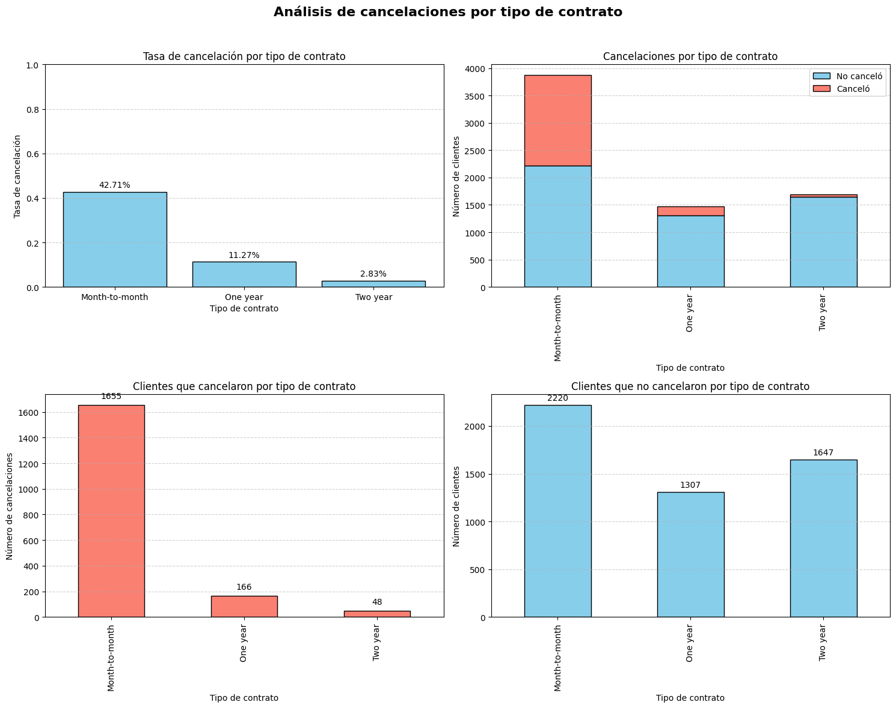
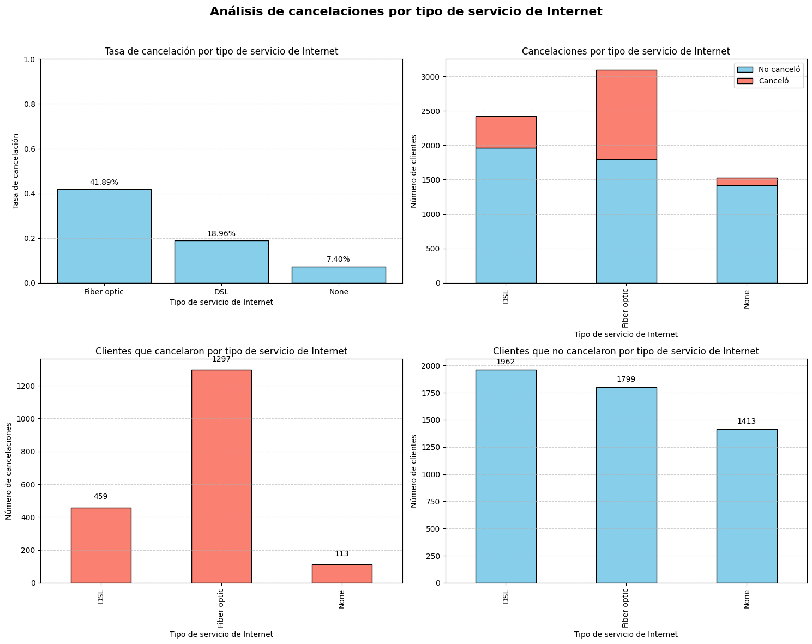

Interconnect is a telecommunications provider offering phone and internet services (DSL and fiber optic), plus add-ons like device protection, online security and streaming packages. Reducing customer churn is critical to maintain stable revenue and lower acquisition costs.
Main question: Which customers are likely to cancel so the company can proactively offer retention actions (discounts, special plans, or promotional codes)?
Build a predictive model to estimate the probability that a customer will cancel their service, enabling targeted retention campaigns and better allocation of marketing/support resources.
The project followed a standard ML workflow: data integration, EDA, feature engineering, preprocessing, model training (including tuning), and final evaluation using robust metrics.
The dataset contains customer records (7,043 rows) with contract info,
service usage, payment method, and billing. Target:
service_canceled. Initial EDA revealed class imbalance
(~26% churn) and strong relationships between duration/total charges and
churn.
customer_duration (months).
StandardScaler where
appropriate.
I trained and compared several classifiers: Logistic Regression, Random Forest, LightGBM, CatBoost, and XGBoost. Hyperparameters were tuned with GridSearchCV, and models were evaluated mainly by ROC-AUC (primary) and Accuracy (secondary).
Summary of main model metrics on the test set:
| Model | Accuracy (Test) | F1 Score | ROC AUC |
|---|---|---|---|
| Logistic Regression | 0.74 | 0.63 | 0.85 |
| Random Forest | 0.79 | 0.67 | 0.88 |
| CatBoost | 0.96 | 0.92 | 0.98 |
| XGBoost | 0.97 | 0.95 | 0.99 |
| LightGBM (Final Model) | 0.97 | 0.95 | 0.99 |
The LightGBM model was selected as the final model due to its combination of high predictive performance (ROC-AUC ≈ 0.99) and efficient training performance, making it suitable for production use.
All planned steps were completed: data cleaning, exploratory analysis, feature engineering, preprocessing (encoding + scaling), model training, hyperparameter tuning and evaluation. Key challenges included handling an imbalanced target and ensuring that preprocessing was applied only on the training set to avoid data leakage; these were solved with upsampling and careful pipeline construction.
The final LightGBM model provides a reliable tool to identify customers at high risk of cancellation, enabling the company to implement targeted retention strategies (promotions, tailored plans, extra support). For future improvements, consider adding customer behavior logs, NPS/survey data, or experimenting with ensemble stacking for even better robustness.


💻 View the full notebook and implementation on GitHub: 👉 Click here to open the repository